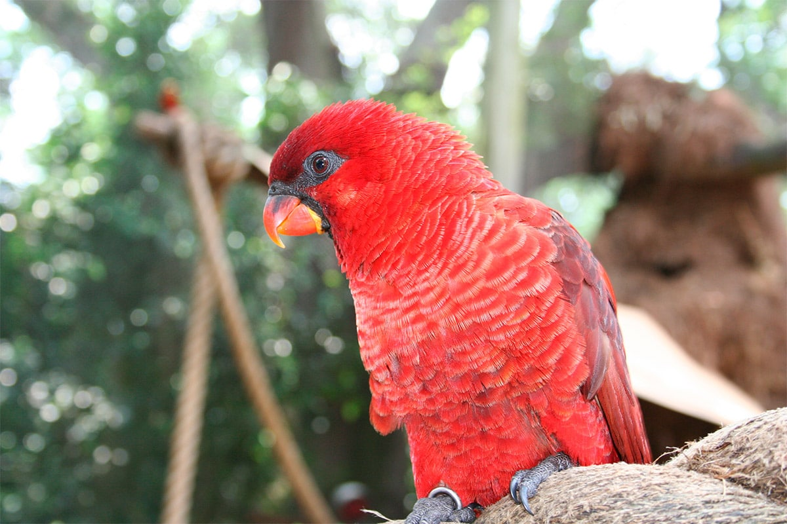

Ce lori présente une silhouette caractéristique en raison de sa relative longue queue. Chez les adultes, pas de
dimorphisme sexuel, le plumage est entièrement rouge éclatant, mais les parties supérieures et les ailes
paraissent plus sombres. Le bec est rouge-orange avec une zone noire à la base. La peau nue orbitale est
également noire. Les plumes des parties inférieures ont de petits liserés jaunâtres, ce quI donne à cette partie
un aspect vaguement écaillé. Les pattes sont grises. L'iris est rouge-orange. Les immatures ont un dos et des
couvertures alaires d'un rouge plus clair. Leur bec est orange terne avec de nombreuses petites marques noires.
Leur peau orbitale est gris blanchâtre. Leur iris est jaune pâle.
Taille : 31 cm
Envergure : -
Poids : 175 à 215 g
Ordre : Psittaciformes
Famille : Psittaculidés
Genre : Pseudeos
Espèce : cardinalis
On a répertorié différentes sortes de cris, notamment un trille assez rugueux et âpre, mais également un
"zheet-zheet" grinçant et nettement plus puissant et plus rauque que celui du Loriquet à tête bleue. On peut
également entendre des notes plus discordantes, plus stridentes et plus rudes.